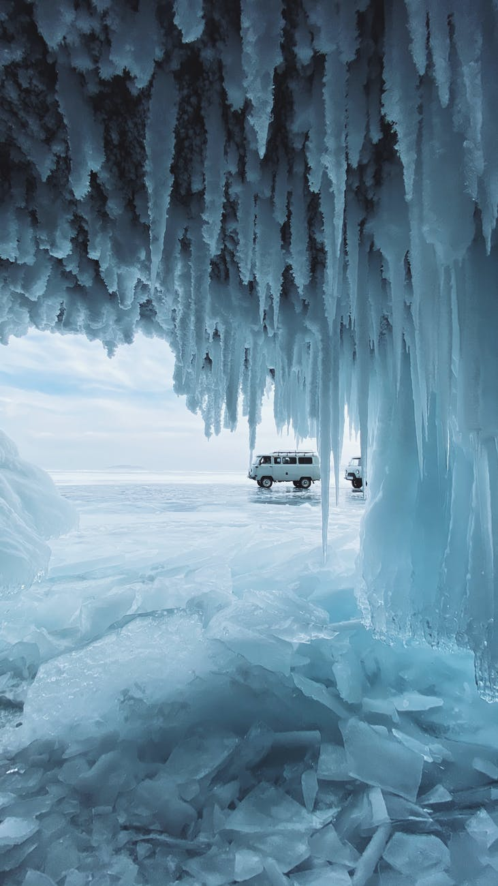

Hello guys this is our first webpage
And this webpage looks stunning
Hello guys again the second webpage is created
And this website is about maintaining the different activities in school
We continue our work on creating the different webpages
And all the webpages created is best in its category
Image of retro bike
Image of nature

Image of sports bike